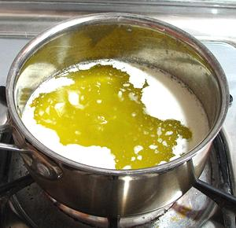

Select a burner on your stove that can be very precisely controlled near
the bottom of its heat range, and preferably one with a heat spreader,
as in the photo, or use some other heat spreader on the burner.
Select a burner on your stove that can be very precisely controlled near
the bottom of its heat range, and preferably one with a heat spreader,
as in the photo, or use some other heat spreader on the burner.
Purchase 1 pound of a top grade unsalted butter and melt it
slowly in a heavy bottomed pan. The pan in the photo is a 1-1/2 quart
tri-ply sauce pan. It would be large enough for 2 pounds of butter. Do
not disturb the butter as it melts.
 Once the Butter has completely melted without being disturbed, there will
be a layer of foam on the top, and some milk solids will have fallen to
the bottom. This foam must be carefully skimmed off.
Once the Butter has completely melted without being disturbed, there will
be a layer of foam on the top, and some milk solids will have fallen to
the bottom. This foam must be carefully skimmed off.
 Here the foam has been partially skimmed off, exposing the melted butter. Skim it all off and simmer the butter, skimming any additional foam. You will see bubbling as the water in the butter slowly boils off. Barely visible in the center of the pan are some bubbles. Let this boiling proceed slowly.
Clarified Butter: Eventually the
bubbling will slow and be a lot more erratic, with small bursts of
bubbles rising to the surface. The temperature will start to rise above
212°F/100°C. When it gets quite erratic and up to around
240°F/115°C, you can call it Clarified Butter, give it
a final skim and decant it off the solids in the bottom. There will still
be some residual water in the butter, but Clarified Butter is usually
used right away, so this will not be a problem.
At this point, the bubbling has stopped, the butter has become a light
honey color, and the temperature has risen to about 290°F/140°C.
You can see the lightly browned milk solids in the bottom of the pan. The
butter I used here, Challenge grade AA, left very little solids on the
bottom. At this point, we have Ghee. Some people like a nuttier
flavor and let the temperature rise higher and the Ghee get darker.
Now do a final skimming and pass the Ghee through an extremely fine mesh
strainer (these can be found in East / Southeast Asian markets), or a double
layer of cheesecloth. There must be no foam or milk solids left in the Ghee,
or it could spoil.
Here we have the finished Ghee, still in it's melted state. In a tightly sealed jar, it will last for several weeks at room temperature. It will be liquid, slurry or solid depending on room temperature. The photo at the top of the page is from this batch cooled to the semi-solid slurry state. Refrigerated it will last pretty much forever.
Caution: When spooning Ghee out
of the jar, it is important that the tools you use be totally dry. Any
moisture introduced could result in spoilage. The jar you store it in
must also have been totally dry before pouring the Ghee into it.